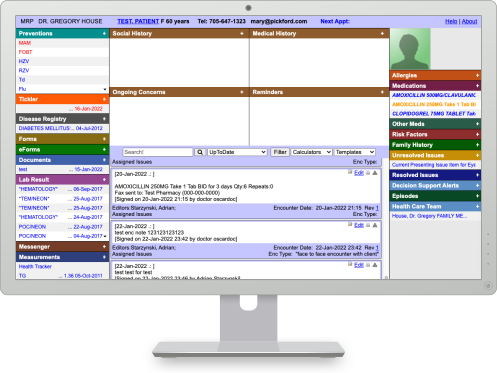
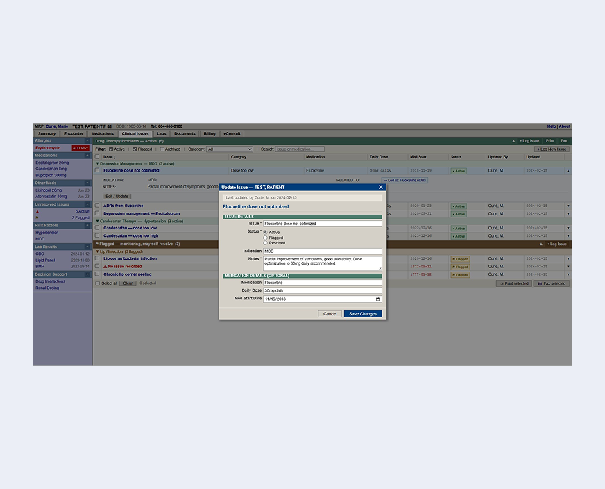

Drug Therapy Problem Tracker
Designing a tool for pharmacists to track, manage, and resolve patient care issues.
Overview
CLIENT
OUTPUTS
2 Prototypes
Research Documentation
Design System &
Component Reference Guide
ROLE
Service Designer/UX Designer
TIMEFRAME
10 months
Context
OSCAR is the open-source electronic medical records system (EMR) used at UBC Pharmacists Clinic, and it was built for physicians. Physicians and pharmacists have very different workflows and as a result, pharmacists at the clinic lacked a dedicated way to record, track, and resolve drug therapy problems (DTPs). DTPs are issues that arise when medication use leads to less-than-optimal patient outcomes.

Objective
Improve pharmacist efficiency and patient safety by designing a DTP management tool integrated into OSCAR.
Approach
I began by shadowing three clinicians during appointments to understand how
DTPs were identified, documented, and followed up with during real patient encounters.
Afterwards, I interviewed each clinician to determine:
- workarounds
- errors
- frustration points
- steps in the typical workflow
- missing info/actions

Insights: both DTP education and OSCAR's design are built around fixed, standardized categorization. In the real world, cases vary in form and complexity, making them difficult to capture in the existing tracker. As a result, each clinician developed their own documentation approach, resulting in highly inconsistent DTP records across the clinic.
After evaluating OSCAR, we identified two core issues: poor information hierarchy and workflow misalignment. Poor layout, unclear status indicators, and the system not reflecting the realities of clinical documentation made it difficult to prioritize, track, and resolve DTPs over time.


Research Insights
- The DTP categories taught in training do not reflect the complexity and variability of DTPs as they appeared in real patient care.
- The existing DTP Tracker was poorly aligned with clinical workflows and offered limited support for follow-up, continuity, and shared accountability.
- DTP documentation practices varied significantly between clinicians, resulting in inconsistent records across the clinic.
- Inconsistent documentation reduced the usefulness of DTP data for internal KPIs and collaboration with external members of the care team.
Design Principles
- Reflect clinical reality. The tracker must accommodate the variability and nuance of real-world DTPs, rather than forcing clinicians into rigid categories.
- Support consistency while allowing customization. The tracker should enable more consistent documentation while respecting individual clinical judgment and workflows.
- Fit into existing workflows with minimal friction. Any improvement must work within the constraints of a live clinic and the OSCAR EMR, without adding documentation burden.
- Enable continuity and accountability over time. The tool should support follow-up, handoff, and shared understanding amongst the care team.

Final Design
One system, two implementations


OSCAR Integrated Prototype
Arial, native HTML controls, OSCAR's native visual system, timeline feature deferred pending chart library approval.
Live and integrated within the clinic.

Concept Prototype
IBM Plex Sans, custom-styled components, animated modals, SVG timeline view, and algorithmic filtering.
Live version, unconstrained. An expanded prototype built on the live version with improved visuals and added functionality unconstrained by OSCAR.

Both Prototypes
Same information architecture, status semantics, field structure, workflow logic, and clinical reasoning.


Research Design
How research shaped the interface

Research Insight 01
Reflect Clinical Reality
In clinical practice, why a medication was prescribed and why a patient remains on it or how they experienced it over time are two different things and both matter. This form captures both:
- Indication field for the clinical rationale behind a prescription.
- Notes field for patient reported context, longitudinal experience, and observations.

Research Insight 02
Support consistency while allowing customization
Research revealed highly inconsistent DTP records across the clinic because each clinician had developed their own documentation approach. This form provides a shared structure for the team, while the notes field gives each clinician space to document in their own words.

Research Insight 03
Fit into existing workflows with minimal friction
This prototype is built within OSCAR's native interface. View the Design System & Component Reference Guide, created to support the developers.
Concept Prototype

Summary Widgets
Provide an overview of issue statuses, reinforce what each status means, and guides clinicians towards where their attention is needed most.
Timeline View
Enables pharmacists to switch from table view to a horizontal timeline where each DTP is a node on a line, visualizing the patterns and causal links between issues to support clinical reasoning.

Impact
The OSCAR-constrained prototype is currently used internally at the UBC Pharmacists Clinic as it was built within a live clinical setting, using existing tools and real workflows. OSCAR's technical constraints shaped what was immediately possible, but didn't stop us from envisioning what could be.
The timeline view was one of the most well-received features in testing but couldn't be implemented in the constrained version because it required connection to a chart library. So this feature lives on in the concept prototype, which was designed to show what the system could become without those limitations. That prototype now serves as the foundation for future development, and this work continues to inform ongoing efforts to expand pharmacist-focused functionality within OSCAR, at UBC and across Canada.